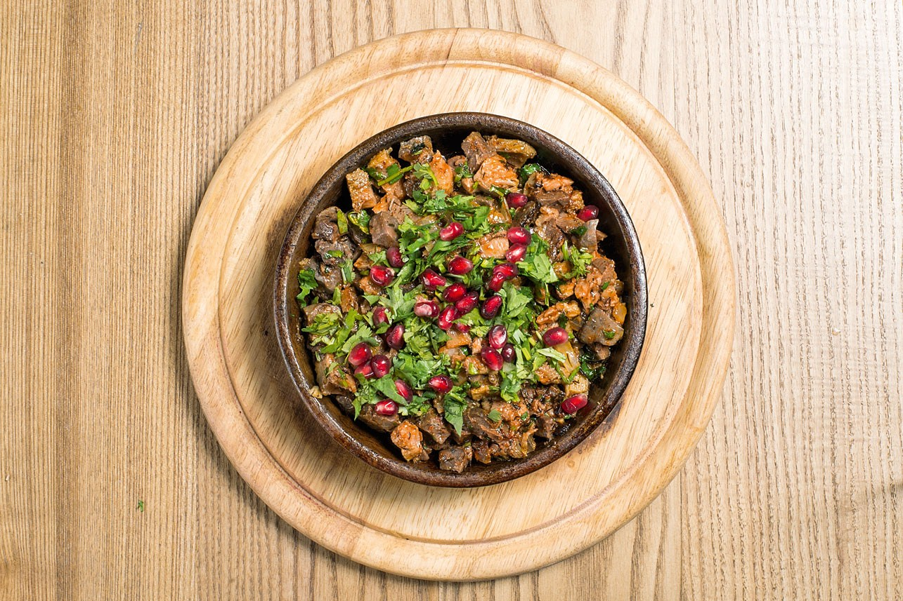

рецепт кучмача

описание
Кучмачи — традиционное грузинское блюдо из потрохов, одна из наиболее
известных грузинских горячих закусок. В качестве основного сырья выступают
сердце, печень, лёгкие и желудки кур и уток, но могут также использоваться
и телячьи субпродукты.
Ингредиенты
- говяжье сердце
- говяжьи лёгкие
- говяжий рубец
- репчатый лук
- кинза
способ приготовления
Обжарьте на разогретом постном масле нарезанный кубиком репчатый лук до
мягкого состояния. В другой сковороде, также на постном масле, обжарьте
печень и сердечки до румяной корочки, минуты по 3-4 с каждой стороны.
Чтобы сердечки приготовились одновременно с печенью, разрежьте их вдоль на
две части.
Дом